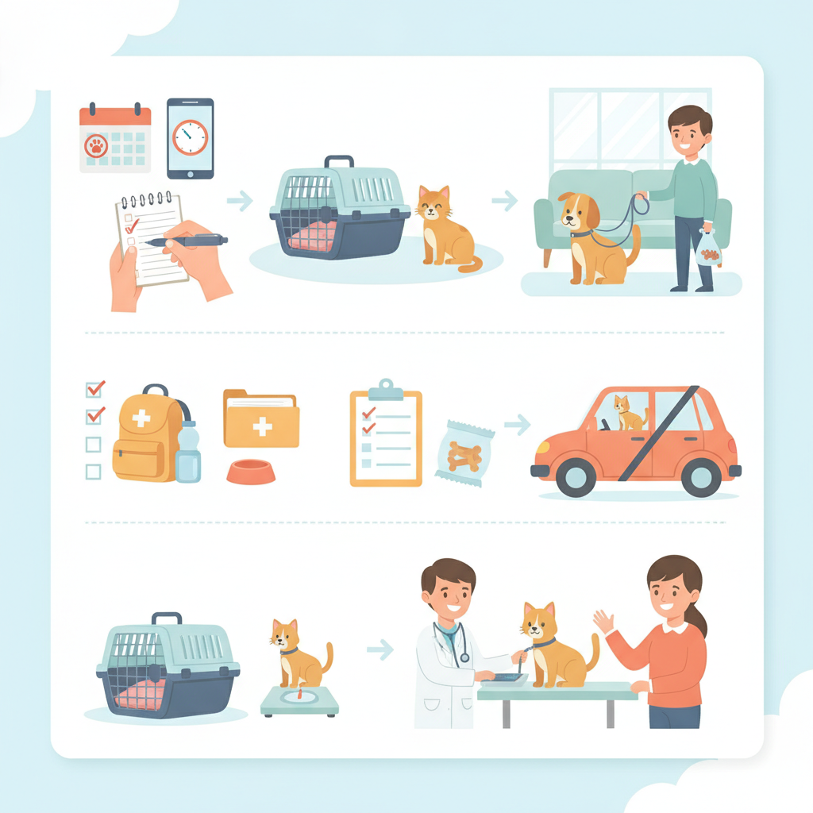

Dla opiekuna
Dla opiekuna - instrukcje przed wizytą - pierwsza wizyta w gabinecie
- Na wszystkie wizyty obowiązują zapisy za pośrednictwem strony internetowej lub poprzez kontakt z recepcją
- Zabiegi w znieczuleniu są umawiane tylko po wcześniejszej konsultacji lekarskiej
- Opiekun przyprowadzający zwierzę powinien być pełnoletni
- Zwierzak powinien być przyprowadzony do przychodni na smyczy lub w transporterze
- Prosimy, aby psy niespokojne oraz agresywne miały założony kaganiec
- Prosimy o zabranie ze sobą dokumentacji leczenia, książeczki zdrowia oraz informacji o przyjmowanych lekach wraz z ich dawkami
- Warto przed wizytą zapisać listę objawów oraz pytań do lekarza
- W przypadku gryzoni, królików, gadów i ptaków na pierwszą wizytę warto od razu zabrać próbki kału
Przygotowanie do badania USG
- Pies powinien być na czczo około 12 godzin przed badaniem (nie dotyczy szczeniąt)
- Kot powinien być na czczo 8–12 godzin przed badaniem
- Około 2 godziny przed badaniem pęcherz moczowy nie powinien być opróżniany (pusty przewód pokarmowy i pełny pęcherz znacznie poprawiają jakość obrazu USG)
- Gryzonie i króliki – nie stosujemy głodówki przed badaniem
Badanie krwi
- Pies lub kot powinien być na czczo 8–12 godzin przed pobraniem krwi
- Woda do picia jest dozwolona
- Należy zadbać o ograniczenie stresu i unikanie intensywnego wysiłku fizycznego przed badaniem, ponieważ może to wpłynąć na wyniki
- Jeśli zwierzę przyjmuje leki, należy skonsultować z lekarzem, czy należy je odstawić przed badaniem
- Małe ssaki egzotyczne – nie stosujemy głodówki przed badaniem
- Kontrolne badanie parametrów tarczycowych – zwierzę musi być na czczo, a pobranie powinno nastąpić 4–6 godzin od podania leku na tarczycę
Badanie kału
- Zalecamy zebrać 3 próbki kału do oddzielnych pojemników
- Próbki należy pobierać w odstępach jedno- lub dwudniowych
- Prosimy dostarczyć kał nie później niż 24 h od pobrania ostatniej próbki. Do tego czasu należy przechowywać je w lodówce
- Pojemniki laboratoryjne dostępne są w naszej przychodni lub w aptece
- Na badanie kału nie trzeba się umawiać – zebrany materiał można dostarczyć o dowolnej porze w godzinach pracy przychodni
Badanie moczu
- Najlepszy do badania jest mocz poranny
- Należy dostarczyć próbkę jak najszybciej. W razie konieczności przechowuj ją w lodówce maksymalnie do 3 godzin
- Mocz prosimy przynieść w jałowym pojemniku laboratoryjnym
- Dla kotów dostępny jest specjalny żwirek ułatwiający pobieranie moczu
- Zwykle zalecana minimalna ilość to 5 ml (wiele badań jesteśmy jednak w stanie wykonać ze znacznie mniejszej objętości)
- Próbki można dostarczać w godzinach 8–19, a w soboty 9–12
Przygotowanie do zabiegu chirurgicznego
- Zwierzę na zabieg chirurgiczny umawiamy po wcześniejszej wizycie kwalifikacyjnej w przychodni
- Na wizytę kwalifikacyjną zwierzak powinien przyjść na czczo (nie dotyczy gryzoni i królików) – przed zabiegiem lekarz niemal zawsze zaleca badania krwi, a w wielu przypadkach także echo serca
- Zazwyczaj zwierzę powinno być na czczo przez 8 godzin przed zabiegiem. Woda powinna być dostępna, ale należy ją zabrać na 2 godziny przed operacją (chyba że lekarz weterynarii zaleci inaczej)
- U królików i gryzoni głodówka nigdy nie jest wskazana
- Zabieg kastracji samic nie powinien być przeprowadzany w trakcie rui lub cieczki ze względu na zwiększone ryzyko krwawienia śródoperacyjnego. U suk idealny moment na kastrację to około 2–3 miesiące od zakończenia cieczki
- W dniu zabiegu należy przyprowadzić zwierzę punktualnie na umówioną godzinę
- W przypadku leków przyjmowanych na stałe, zazwyczaj nie jest wskazane ich odstawianie przed zabiegiem, jednak zawsze należy to wcześniej skonsultować z lekarzem prowadzącym
Króliki i gryzonie
- Na wizytę należy przetransportować pupila w bezpiecznym, odpornym na przegryzienie i dobrze wentylowanym transporterze
- Transporter powinien być wyściełany podłożem ograniczającym ślizganie się, np. ręcznikiem lub matą kokosową (w przypadku podkładów higienicznych – jeśli pupil próbuje je zjadać, należy wybrać inną opcję)
- Małe ssaki są bardzo wrażliwe na wahania temperatur. Jeśli nie można zapewnić im transportu w klimatyzowanym pojeździe, latem warto włożyć do transportera zabezpieczony wkład chłodzący lub butelkę z zimną wodą, a zimą termofor
- Nigdy nie głodzimy królików i gryzoni przed wizytą, badaniami krwi ani zabiegami chirurgicznymi
- Zawsze warto włożyć do transportera trochę sianka, karmy lub przysmaków, co znacznie ogranicza stres zwierzęcia
- Na wizytę warto zabrać ze sobą próbki kału – najlepiej po kilka bobków zebranych z 3 dni
- Badanie kału zalecamy bardzo często: podczas pierwszej wizyty, przed szczepieniem oraz przed zabiegami chirurgicznymi